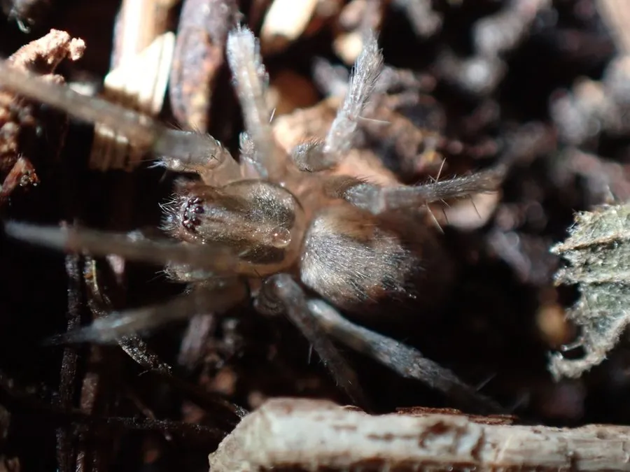

蛛形动物 · 动物界
家隅蛛 Tegenaria domestica

全球室内常见的漏斗网蜘蛛，常在墙角结出漏斗形蛛网，捕食昆虫和其他小蜘蛛，对人基本无害，是世界上分布最广的家蛛之一。
- 分类
- 门节肢动物门纲蛛形纲目蜘蛛目科漏斗蛛科属隅蛛属
- 栖息环境
- 室内墙角、窗台、门框、家具下方及地下室等阴暗处
- 地理分布
- 全球室内环境，中国各地房屋中常见
- 保护级别
- IUCN 暂无评估；中国未列入国家重点保护名录
物种志
家隅蛛雌蛛体长 8–12 毫米，足展 2–3 厘米，雄蛛略小，体色呈黄褐或灰褐色，头胸部有深色斑纹，腹部呈灰褐色并带浅色斑驳，八足细长，末端有刺毛。它常在墙角、窗台、门框和家具下方结出漏斗状的蛛网，网的一端延伸成管状，蜘蛛就躲在管内守候。
家隅蛛几乎遍布全球的室内环境，是典型的“家蛛”，夜间在网口附近等待猎物，捕食蚊子、苍蝇、蛾类和其他小型蜘蛛，也会主动走出网外捕猎。秋季雌蛛产下含 50–100 枚卵的卵囊，挂在网附近的缝隙中，雌蛛会守护卵囊一段时间，幼蛛孵化后扩散。家隅蛛毒性很弱，对人基本无害，平时不会主动咬人；它是室内常见的益虫，但蛛网过多时也需要清理。
形态与习性
- 食性蚊子、苍蝇、蛾类和其他小型蜘蛛
- 体长雌蛛 8–12 mm，足展 2–3 cm
- 寿命约 1–2 年
- 繁殖卵生，每卵囊 50–100 枚，雌蛛守护卵囊
- 活动节律夜行性，多在网口守候猎物
- 网型漏斗状蛛网，管状部分用于藏身
趣味知识
- 家隅蛛结的是漏斗形蛛网，它会躲在网管深处等待猎物落网。
- 它是全球室内最常见的蜘蛛之一，几乎每栋房子都可能有它的踪迹。
- 家隅蛛毒性很弱，对人基本无害，是室内捕食蚊蝇的益虫。